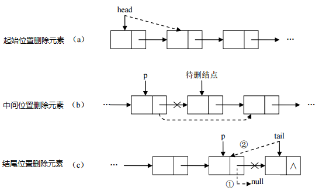
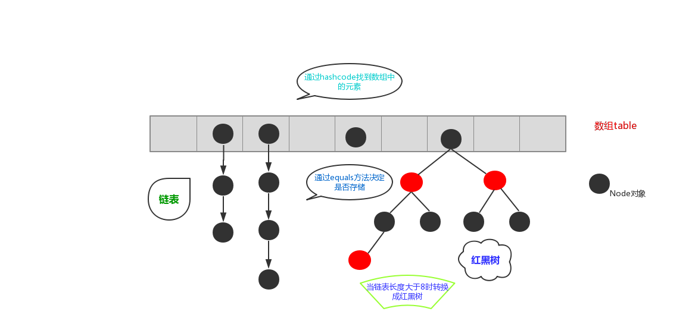

day03 【List、Set、数据结构、Collections】主要内容教学目标第一章 数据结构2.1 数据结构有什么用？2.2 常见的数据结构栈队列数组链表红黑树第二章 List集合1.1 List接口介绍1.2 List接口中常用方法第三章 List的子类3.1 ArrayList集合3.2 LinkedList集合第四章 Set接口3.1 HashSet集合介绍2.2 HashSet集合存储数据的结构（哈希表）2.3 HashSet存储自定义类型元素2.3 LinkedHashSet1.9 可变参数第五章 Collections2.1 常用功能2.2 Comparator比较器2.3 简述Comparable和Comparator两个接口的区别。2.4 练习2.5 扩展
day03 【List、Set、数据结构、Collections】
主要内容
- 数据结构
- List集合
- Set集合
- Collections
教学目标
能够说出List集合特点
能够说出常见的数据结构
能够说出数组结构特点
能够说出栈结构特点
能够说出队列结构特点
能够说出单向链表结构特点
能够说出Set集合的特点
能够说出哈希表的特点
使用HashSet集合存储自定义元素
能够说出可变参数的格式
能够使用集合工具类
能够使用Comparator比较器进行排序
第一章 数据结构
2.1 数据结构有什么用？
当你用着java里面的容器类很爽的时候，你有没有想过，怎么ArrayList就像一个无限扩充的数组，也好像链表之类的。好用吗？好用，这就是数据结构的用处，只不过你在不知不觉中使用了。
现实世界的存储，我们使用的工具和建模。每种数据结构有自己的优点和缺点，想想如果Google的数据用的是数组的存储，我们还能方便地查询到所需要的数据吗？而算法，在这么多的数据中如何做到最快的插入，查找，删除，也是在追求更快。
我们java是面向对象的语言，就好似自动档轿车，C语言好似手动档吉普。数据结构呢？是变速箱的工作原理。你完全可以不知道变速箱怎样工作，就把自动档的车子从 A点 开到 B点，而且未必就比懂得的人慢。写程序这件事，和开车一样，经验可以起到很大作用，但如果你不知道底层是怎么工作的，就永远只能开车，既不会修车，也不能造车。当然了，数据结构内容比较多，细细的学起来也是相对费功夫的，不可能达到一蹴而就。我们将常见的数据结构：堆栈、队列、数组、链表和红黑树 这几种给大家介绍一下，作为数据结构的入门，了解一下它们的特点即可。
2.2 常见的数据结构
数据存储的常用结构有：栈、队列、数组、链表和红黑树。我们分别来了解一下：
栈
- 栈：stack,又称堆栈，它是运算受限的线性表，其限制是仅允许在标的一端进行插入和删除操作，不允许在其他任何位置进行添加、查找、删除等操作。
简单的说：采用该结构的集合，对元素的存取有如下的特点
先进后出（即，存进去的元素，要在后它后面的元素依次取出后，才能取出该元素）。例如，子弹压进弹夹，先压进去的子弹在下面，后压进去的子弹在上面，当开枪时，先弹出上面的子弹，然后才能弹出下面的子弹。
栈的入口、出口的都是栈的顶端位置。

这里两个名词需要注意：
- 压栈：就是存元素。即，把元素存储到栈的顶端位置，栈中已有元素依次向栈底方向移动一个位置。
- 弹栈：就是取元素。即，把栈的顶端位置元素取出，栈中已有元素依次向栈顶方向移动一个位置。
队列
- 队列：queue,简称队，它同堆栈一样，也是一种运算受限的线性表，其限制是仅允许在表的一端进行插入，而在表的另一端进行删除。
简单的说，采用该结构的集合，对元素的存取有如下的特点：
- 先进先出（即，存进去的元素，要在后它前面的元素依次取出后，才能取出该元素）。例如，小火车过山洞，车头先进去，车尾后进去；车头先出来，车尾后出来。
- 队列的入口、出口各占一侧。例如，下图中的左侧为入口，右侧为出口。

数组
- 数组:Array,是有序的元素序列，数组是在内存中开辟一段连续的空间，并在此空间存放元素。就像是一排出租屋，有100个房间，从001到100每个房间都有固定编号，通过编号就可以快速找到租房子的人。
简单的说,采用该结构的集合，对元素的存取有如下的特点：
查找元素快：通过索引，可以快速访问指定位置的元素

增删元素慢
- 指定索引位置增加元素：需要创建一个新数组，将指定新元素存储在指定索引位置，再把原数组元素根据索引，复制到新数组对应索引的位置。如下图

- 指定索引位置删除元素：需要创建一个新数组，把原数组元素根据索引，复制到新数组对应索引的位置，原数组中指定索引位置元素不复制到新数组中。如下图

- 指定索引位置增加元素：需要创建一个新数组，将指定新元素存储在指定索引位置，再把原数组元素根据索引，复制到新数组对应索引的位置。如下图
链表
链表:linked list,由一系列结点node（链表中每一个元素称为结点）组成，结点可以在运行时i动态生成。每个结点包括两个部分：一个是存储数据元素的数据域，另一个是存储下一个结点地址的指针域。我们常说的链表结构有单向链表与双向链表，那么这里给大家介绍的是单向链表。

简单的说，采用该结构的集合，对元素的存取有如下的特点：
多个结点之间，通过地址进行连接。例如，多个人手拉手，每个人使用自己的右手拉住下个人的左手，依次类推，这样多个人就连在一起了。

查找元素慢：想查找某个元素，需要通过连接的节点，依次向后查找指定元素
增删元素快：
增加元素：只需要修改连接下个元素的地址即可。

删除元素：只需要修改连接下个元素的地址即可。

红黑树
- 二叉树：binary tree ,是每个结点不超过2的有序树（tree） 。
简单的理解，就是一种类似于我们生活中树的结构，只不过每个结点上都最多只能有两个子结点。
二叉树是每个节点最多有两个子树的树结构。顶上的叫根结点，两边被称作“左子树”和“右子树”。
如图：

我们要说的是二叉树的一种比较有意思的叫做红黑树，红黑树本身就是一颗二叉查找树，将节点插入后，该树仍然是一颗二叉查找树。也就意味着，树的键值仍然是有序的。
红黑树的约束:
- 节点可以是红色的或者黑色的
- 根节点是黑色的
- 叶子节点(特指空节点)是黑色的
- 每个红色节点的子节点都是黑色的
- 任何一个节点到其每一个叶子节点的所有路径上黑色节点数相同
红黑树的特点:
速度特别快,趋近平衡树,查找叶子元素最少和最多次数不多于二倍
第二章 List集合
我们掌握了Collection接口的使用后，再来看看Collection接口中的子类，他们都具备那些特性呢？
接下来，我们一起学习Collection中的常用几个子类（java.util.List集合、java.util.Set集合）。
1.1 List接口介绍
java.util.List接口继承自Collection接口，是单列集合的一个重要分支，习惯性地会将实现了List接口的对象称为List集合。在List集合中允许出现重复的元素，所有的元素是以一种线性方式进行存储的，在程序中可以通过索引来访问集合中的指定元素。另外，List集合还有一个特点就是元素有序，即元素的存入顺序和取出顺序一致。
看完API，我们总结一下：
List接口特点：
- 它是一个元素存取有序的集合。例如，存元素的顺序是11、22、33。那么集合中，元素的存储就是按照11、22、33的顺序完成的）。
- 它是一个带有索引的集合，通过索引就可以精确的操作集合中的元素（与数组的索引是一个道理）。
- 集合中可以有重复的元素，通过元素的equals方法，来比较是否为重复的元素。
tips:我们在基础班的时候已经学习过List接口的子类java.util.ArrayList类，该类中的方法都是来自List中定义。
1.2 List接口中常用方法
List作为Collection集合的子接口，不但继承了Collection接口中的全部方法，而且还增加了一些根据元素索引来操作集合的特有方法，如下：
public void add(int index, E element): 将指定的元素，添加到该集合中的指定位置上。public E get(int index):返回集合中指定位置的元素。public E remove(int index): 移除列表中指定位置的元素, 返回的是被移除的元素。public E set(int index, E element):用指定元素替换集合中指定位置的元素,返回值的更新前的元素。
List集合特有的方法都是跟索引相关，我们在基础班都学习过，那么我们再来复习一遍吧：
xxxxxxxxxxpublic class ListDemo { public static void main(String[] args) { // 创建List集合对象 List<String> list = new ArrayList<String>(); // 往 尾部添加 指定元素 list.add("图图"); list.add("小美"); list.add("不高兴"); System.out.println(list); // add(int index,String s) 往指定位置添加 list.add(1,"没头脑"); System.out.println(list); // String remove(int index) 删除指定位置元素 返回被删除元素 // 删除索引位置为2的元素 System.out.println("删除索引位置为2的元素"); System.out.println(list.remove(2)); System.out.println(list); // String set(int index,String s) // 在指定位置 进行 元素替代（改） // 修改指定位置元素 list.set(0, "三毛"); System.out.println(list); // String get(int index) 获取指定位置元素 // 跟size() 方法一起用 来 遍历的 for(int i = 0;i<list.size();i++){ System.out.println(list.get(i)); } //还可以使用增强for for (String string : list) { System.out.println(string); } }}第三章 List的子类
3.1 ArrayList集合
java.util.ArrayList集合数据存储的结构是数组结构。元素增删慢，查找快，由于日常开发中使用最多的功能为查询数据、遍历数据，所以ArrayList是最常用的集合。
许多程序员开发时非常随意地使用ArrayList完成任何需求，并不严谨，这种用法是不提倡的。
3.2 LinkedList集合
java.util.LinkedList集合数据存储的结构是链表结构。方便元素添加、删除的集合。
LinkedList是一个双向链表，那么双向链表是什么样子的呢，我们用个图了解下

实际开发中对一个集合元素的添加与删除经常涉及到首尾操作，而LinkedList提供了大量首尾操作的方法。这些方法我们作为了解即可：
public void addFirst(E e):将指定元素插入此列表的开头。public void addLast(E e):将指定元素添加到此列表的结尾。public E getFirst():返回此列表的第一个元素。public E getLast():返回此列表的最后一个元素。public E removeFirst():移除并返回此列表的第一个元素。public E removeLast():移除并返回此列表的最后一个元素。public E pop():从此列表所表示的堆栈处弹出一个元素。public void push(E e):将元素推入此列表所表示的堆栈。public boolean isEmpty()：如果列表不包含元素，则返回true。
LinkedList是List的子类，List中的方法LinkedList都是可以使用，这里就不做详细介绍，我们只需要了解LinkedList的特有方法即可。在开发时，LinkedList集合也可以作为堆栈，队列的结构使用。（了解即可）
方法演示：
xpublic class LinkedListDemo { public static void main(String[] args) { LinkedList<String> link = new LinkedList<String>(); //添加元素 link.addFirst("abc1"); link.addFirst("abc2"); link.addFirst("abc3"); System.out.println(link); // 获取元素 System.out.println(link.getFirst()); System.out.println(link.getLast()); // 删除元素 System.out.println(link.removeFirst()); System.out.println(link.removeLast()); while (!link.isEmpty()) { //判断集合是否为空 System.out.println(link.pop()); //弹出集合中的栈顶元素 } System.out.println(link); }}第四章 Set接口
java.util.Set接口和java.util.List接口一样，同样继承自Collection接口，它与Collection接口中的方法基本一致，并没有对Collection接口进行功能上的扩充，只是比Collection接口更加严格了。与List接口不同的是，Set接口中元素无序，并且都会以某种规则保证存入的元素不出现重复。
Set集合有多个子类，这里我们介绍其中的java.util.HashSet、java.util.LinkedHashSet这两个集合。
tips:Set集合取出元素的方式可以采用：迭代器、增强for。
3.1 HashSet集合介绍
java.util.HashSet是Set接口的一个实现类，它所存储的元素是不可重复的，并且元素都是无序的(即存取顺序不一致)。java.util.HashSet底层的实现其实是一个java.util.HashMap支持，由于我们暂时还未学习，先做了解。
HashSet是根据对象的哈希值来确定元素在集合中的存储位置，因此具有良好的存取和查找性能。保证元素唯一性的方式依赖于：hashCode与equals方法。
我们先来使用一下Set集合存储，看下现象，再进行原理的讲解:
xxxxxxxxxxpublic class HashSetDemo { public static void main(String[] args) { //创建 Set集合 HashSet<String> set = new HashSet<String>(); //添加元素 set.add(new String("cba")); set.add("abc"); set.add("bac"); set.add("cba"); //遍历 for (String name : set) { System.out.println(name); } }}输出结果如下，说明集合中不能存储重复元素：
xxxxxxxxxxcbaabcbac
tips:根据结果我们发现字符串"cba"只存储了一个，也就是说重复的元素set集合不存储。
2.2 HashSet集合存储数据的结构（哈希表）
什么是哈希表呢？
在JDK1.8之前，哈希表底层采用数组+链表实现，即使用链表处理冲突，同一hash值的链表都存储在一个链表里。但是当位于一个桶中的元素较多，即hash值相等的元素较多时，通过key值依次查找的效率较低。而JDK1.8中，哈希表存储采用数组+链表+红黑树实现，当链表长度超过阈值（8）时，将链表转换为红黑树，这样大大减少了查找时间。
简单的来说，哈希表是由数组+链表+红黑树（JDK1.8增加了红黑树部分）实现的，如下图所示。
看到这张图就有人要问了，这个是怎么存储的呢？
为了方便大家的理解我们结合一个存储流程图来说明一下：

总而言之，JDK1.8引入红黑树大程度优化了HashMap的性能，那么对于我们来讲保证HashSet集合元素的唯一，其实就是根据对象的hashCode和equals方法来决定的。如果我们往集合中存放自定义的对象，那么保证其唯一，就必须复写hashCode和equals方法建立属于当前对象的比较方式。
2.3 HashSet存储自定义类型元素
给HashSet中存放自定义类型元素时，需要重写对象中的hashCode和equals方法，建立自己的比较方式，才能保证HashSet集合中的对象唯一
创建自定义Student类
xxxxxxxxxxpublic class Student { private String name; private int age; public Student() { } public Student(String name, int age) { this.name = name; this.age = age; } public String getName() { return name; } public void setName(String name) { this.name = name; } public int getAge() { return age; } public void setAge(int age) { this.age = age; } public boolean equals(Object o) { if (this == o) return true; if (o == null || getClass() != o.getClass()) return false; Student student = (Student) o; return age == student.age && Objects.equals(name, student.name); } public int hashCode() { return Objects.hash(name, age); }}xxxxxxxxxxpublic class HashSetDemo2 { public static void main(String[] args) { //创建集合对象 该集合中存储 Student类型对象 HashSet<Student> stuSet = new HashSet<Student>(); //存储 Student stu = new Student("于谦", 43); stuSet.add(stu); stuSet.add(new Student("郭德纲", 44)); stuSet.add(new Student("于谦", 43)); stuSet.add(new Student("郭麒麟", 23)); stuSet.add(stu); for (Student stu2 : stuSet) { System.out.println(stu2); } }}执行结果：Student [name=郭德纲, age=44]Student [name=于谦, age=43]Student [name=郭麒麟, age=23]2.3 LinkedHashSet
我们知道HashSet保证元素唯一，可是元素存放进去是没有顺序的，那么我们要保证有序，怎么办呢？
在HashSet下面有一个子类java.util.LinkedHashSet，它是链表和哈希表组合的一个数据存储结构。
演示代码如下:
xxxxxxxxxxpublic class LinkedHashSetDemo { public static void main(String[] args) { Set<String> set = new LinkedHashSet<String>(); set.add("bbb"); set.add("aaa"); set.add("abc"); set.add("bbc"); Iterator<String> it = set.iterator(); while (it.hasNext()) { System.out.println(it.next()); } }}结果： bbb aaa abc bbc1.9 可变参数
在JDK1.5之后，如果我们定义一个方法需要接受多个参数，并且多个参数类型一致，我们可以对其简化成如下格式：
xxxxxxxxxx修饰符 返回值类型 方法名(参数类型... 形参名){ }
其实这个书写完全等价与
xxxxxxxxxx修饰符 返回值类型 方法名(参数类型[] 形参名){ }
只是后面这种定义，在调用时必须传递数组，而前者可以直接传递数据即可。
JDK1.5以后。出现了简化操作。... 用在参数上，称之为可变参数。
同样是代表数组，但是在调用这个带有可变参数的方法时，不用创建数组(这就是简单之处)，直接将数组中的元素作为实际参数进行传递，其实编译成的class文件，将这些元素先封装到一个数组中，在进行传递。这些动作都在编译.class文件时，自动完成了。
代码演示：
xxxxxxxxxxpublic class ChangeArgs { public static void main(String[] args) { int[] arr = { 1, 4, 62, 431, 2 }; int sum = getSum(arr); System.out.println(sum); // 6 7 2 12 2121 // 求 这几个元素和 6 7 2 12 2121 int sum2 = getSum(6, 7, 2, 12, 2121); System.out.println(sum2); } /* * 完成数组 所有元素的求和 原始写法 public static int getSum(int[] arr){ int sum = 0; for(int a : arr){ sum += a; } return sum; } */ //可变参数写法 public static int getSum(int... arr) { int sum = 0; for (int a : arr) { sum += a; } return sum; }}tips: 上述add方法在同一个类中，只能存在一个。因为会发生调用的不确定性
注意：如果在方法书写时，这个方法拥有多参数，参数中包含可变参数，可变参数一定要写在参数列表的末尾位置。
第五章 Collections
2.1 常用功能
java.utils.Collections是集合工具类，用来对集合进行操作。部分方法如下：
public static <T> boolean addAll(Collection<T> c, T... elements):往集合中添加一些元素。public static void shuffle(List<?> list) 打乱顺序:打乱集合顺序。public static <T> void sort(List<T> list):将集合中元素按照默认规则排序。public static <T> void sort(List<T> list，Comparator<? super T> ):将集合中元素按照指定规则排序。
代码演示：
xxxxxxxxxxpublic class CollectionsDemo { public static void main(String[] args) { ArrayList<Integer> list = new ArrayList<Integer>(); //原来写法 //list.add(12); //list.add(14); //list.add(15); //list.add(1000); //采用工具类 完成 往集合中添加元素 Collections.addAll(list, 5, 222, 1，2); System.out.println(list); //排序方法 Collections.sort(list); System.out.println(list); }}结果：[5, 222, 1, 2][1, 2, 5, 222]代码演示之后 ，发现我们的集合按照顺序进行了排列，可是这样的顺序是采用默认的顺序，如果想要指定顺序那该怎么办呢？
我们发现还有个方法没有讲，public static <T> void sort(List<T> list，Comparator<? super T> ):将集合中元素按照指定规则排序。接下来讲解一下指定规则的排列。
2.2 Comparator比较器
我们还是先研究这个方法
public static <T> void sort(List<T> list):将集合中元素按照默认规则排序。
不过这次存储的是字符串类型。
xxxxxxxxxxpublic class CollectionsDemo2 { public static void main(String[] args) { ArrayList<String> list = new ArrayList<String>(); list.add("cba"); list.add("aba"); list.add("sba"); list.add("nba"); //排序方法 Collections.sort(list); System.out.println(list); }}结果：
xxxxxxxxxx[aba, cba, nba, sba]
我们使用的是默认的规则完成字符串的排序，那么默认规则是怎么定义出来的呢？
说到排序了，简单的说就是两个对象之间比较大小，那么在JAVA中提供了两种比较实现的方式，一种是比较死板的采用java.lang.Comparable接口去实现，一种是灵活的当我需要做排序的时候在去选择的java.util.Comparator接口完成。
那么我们采用的public static <T> void sort(List<T> list)这个方法完成的排序，实际上要求了被排序的类型需要实现Comparable接口完成比较的功能，在String类型上如下：
xxxxxxxxxxpublic final class String implements java.io.Serializable, Comparable<String>, CharSequence {String类实现了这个接口，并完成了比较规则的定义，但是这样就把这种规则写死了，那比如我想要字符串按照第一个字符降序排列，那么这样就要修改String的源代码，这是不可能的了，那么这个时候我们可以使用
public static <T> void sort(List<T> list，Comparator<? super T> )方法灵活的完成，这个里面就涉及到了Comparator这个接口，位于位于java.util包下，排序是comparator能实现的功能之一,该接口代表一个比较器，比较器具有可比性！顾名思义就是做排序的，通俗地讲需要比较两个对象谁排在前谁排在后，那么比较的方法就是：
public int compare(String o1, String o2)：比较其两个参数的顺序。两个对象比较的结果有三种：大于，等于，小于。
如果要按照升序排序， 则o1 小于o2，返回（负数），相等返回0，01大于02返回（正数） 如果要按照降序排序 则o1 小于o2，返回（正数），相等返回0，01大于02返回（负数）
操作如下:
xxxxxxxxxxpublic class CollectionsDemo3 { public static void main(String[] args) { ArrayList<String> list = new ArrayList<String>(); list.add("cba"); list.add("aba"); list.add("sba"); list.add("nba"); //排序方法 按照第一个单词的降序 Collections.sort(list, new Comparator<String>() { public int compare(String o1, String o2) { return o2.charAt(0) - o1.charAt(0); } }); System.out.println(list); }}结果如下：
xxxxxxxxxx[sba, nba, cba, aba]
2.3 简述Comparable和Comparator两个接口的区别。
Comparable：强行对实现它的每个类的对象进行整体排序。这种排序被称为类的自然排序，类的compareTo方法被称为它的自然比较方法。只能在类中实现compareTo()一次，不能经常修改类的代码实现自己想要的排序。实现此接口的对象列表（和数组）可以通过Collections.sort（和Arrays.sort）进行自动排序，对象可以用作有序映射中的键或有序集合中的元素，无需指定比较器。
Comparator强行对某个对象进行整体排序。可以将Comparator 传递给sort方法（如Collections.sort或 Arrays.sort），从而允许在排序顺序上实现精确控制。还可以使用Comparator来控制某些数据结构（如有序set或有序映射）的顺序，或者为那些没有自然顺序的对象collection提供排序。
2.4 练习
创建一个学生类，存储到ArrayList集合中完成指定排序操作。
Student 初始类
xxxxxxxxxxpublic class Student{ private String name; private int age; public Student() { } public Student(String name, int age) { this.name = name; this.age = age; } public String getName() { return name; } public void setName(String name) { this.name = name; } public int getAge() { return age; } public void setAge(int age) { this.age = age; } public String toString() { return "Student{" + "name='" + name + '\'' + ", age=" + age + '}'; }}测试类：
xxxxxxxxxxpublic class Demo { public static void main(String[] args) { // 创建四个学生对象 存储到集合中 ArrayList<Student> list = new ArrayList<Student>(); list.add(new Student("rose",18)); list.add(new Student("jack",16)); list.add(new Student("abc",16)); list.add(new Student("ace",17)); list.add(new Student("mark",16)); /* 让学生 按照年龄排序 升序 */// Collections.sort(list);//要求 该list中元素类型 必须实现比较器Comparable接口 for (Student student : list) { System.out.println(student); } }}发现，当我们调用Collections.sort()方法的时候 程序报错了。
原因：如果想要集合中的元素完成排序，那么必须要实现比较器Comparable接口。
于是我们就完成了Student类的一个实现，如下：
xxxxxxxxxxpublic class Student implements Comparable<Student>{ .... public int compareTo(Student o) { return this.age-o.age;//升序 }}再次测试，代码就OK 了效果如下：
xxxxxxxxxxStudent{name='jack', age=16}Student{name='abc', age=16}Student{name='mark', age=16}Student{name='ace', age=17}Student{name='rose', age=18}2.5 扩展
如果在使用的时候，想要独立的定义规则去使用 可以采用Collections.sort(List list,Comparetor
xxxxxxxxxxCollections.sort(list, new Comparator<Student>() { public int compare(Student o1, Student o2) { return o2.getAge()-o1.getAge();//以学生的年龄降序 }});效果：
xxxxxxxxxxStudent{name='rose', age=18}Student{name='ace', age=17}Student{name='jack', age=16}Student{name='abc', age=16}Student{name='mark', age=16}
如果想要规则更多一些，可以参考下面代码：
xxxxxxxxxxCollections.sort(list, new Comparator<Student>() { public int compare(Student o1, Student o2) { // 年龄降序 int result = o2.getAge()-o1.getAge();//年龄降序 if(result==0){//第一个规则判断完了 下一个规则 姓名的首字母 升序 result = o1.getName().charAt(0)-o2.getName().charAt(0); } return result; } });效果如下：
Student{name='rose', age=18}Student{name='ace', age=17}Student{name='abc', age=16}Student{name='jack', age=16}Student{name='mark', age=16}